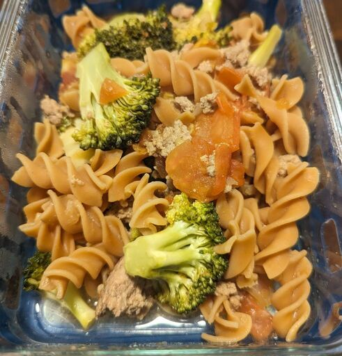

Ground Turkey and Broccoli Pasta

Ingredients
- 3/4 pound ground turkey
- 2 cups pasta gluten-free
- 1/2 onion chopped
- 1 head broccoli
- 2 medium tomatoes diced
- 2 tsp mustard
- 1 tbsp soy sauce
- 1 tsp olive oil
Recipe
- Cook the pasta: i.e. add water to pot. Enough salt that it tastes like the ocean, add pasta and let sit until al dente.
- Preheat large skillet, drizzle olive oil, Add ground turkey and cook until golden brown.
- Add chopped onions to turkey, and cook until onions are translucent (~ 5 minutes)
- Add chopped tomatoes, broccoli, mustard, soy sauce, salt, and pepper. Cook until broccoli is soft and there is a light sauce on the bottom of the pan.
- Combine pasta with turkey sauce in a large bowl. SERVE!